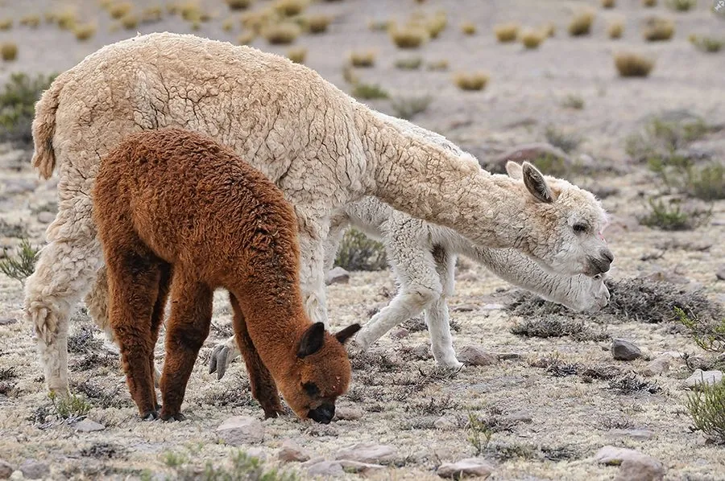

哺乳动物 · 动物界
羊驼 Lama pacos

南美洲安第斯山区著名的家养骆驼科动物，毛被厚密柔软、颈部细长，性情温和，是重要的毛用家畜。
- 分类
- 门脊索动物门纲哺乳纲目偶蹄目科骆驼科属羊驼属
- 栖息环境
- 南美洲安第斯高原的草地与牧场，也见于人工饲养场
- 地理分布
- 主要家养于秘鲁、玻利维亚、厄瓜多尔、智利的高原，并被引入欧美、澳大利亚等地
- 保护级别
- 暂无评估（家养物种）
物种志
羊驼体长 1.2–1.8 米，肩高 0.9–1.1 米，体重 50–80 kg。它的颈部细长，被毛厚密柔软，有白色、棕色、黑色等多种颜色；头部小，耳朵直立，眼睛大，四肢细长，脚掌有肉垫，外形与驼羊相似但更小巧。
羊驼是南美洲安第斯山区居民长期驯化的家养动物，由原驼和骆马的祖先驯化而来，如今主要分布于秘鲁、玻利维亚、厄瓜多尔和智利的高原，也被引入欧美和澳大利亚等地饲养。它性情温和，结成群体活动，以草和灌木为食，适应高海拔低氧环境。羊驼的毛纤维细软保暖，是重要的毛用家畜，肉和皮也可利用；它们还会被用作高原驮畜和观赏动物。雌性妊娠期约 11 个月，每胎 1 仔，寿命约 15–25 年。
形态与习性
- 食性草与灌木
- 体长1.2–1.8 m，肩高 0.9–1.1 m
- 体重50–80 kg
- 寿命约 15–25 年
- 繁殖妊娠期约 11 个月，每胎 1 仔
- 毛色白色、棕色、黑色等多种
- 经济价值毛纤维细软保暖，是重要毛用家畜
趣味知识
- 羊驼的毛纤维细软保暖，是安第斯山区重要的毛用家畜。
- 它性情温和，常被用作高原驮畜和观赏动物。
- 羊驼能适应高海拔低氧环境，原产于安第斯山区。
- 羊驼被引入欧美和澳大利亚等地饲养，受到游客欢迎。